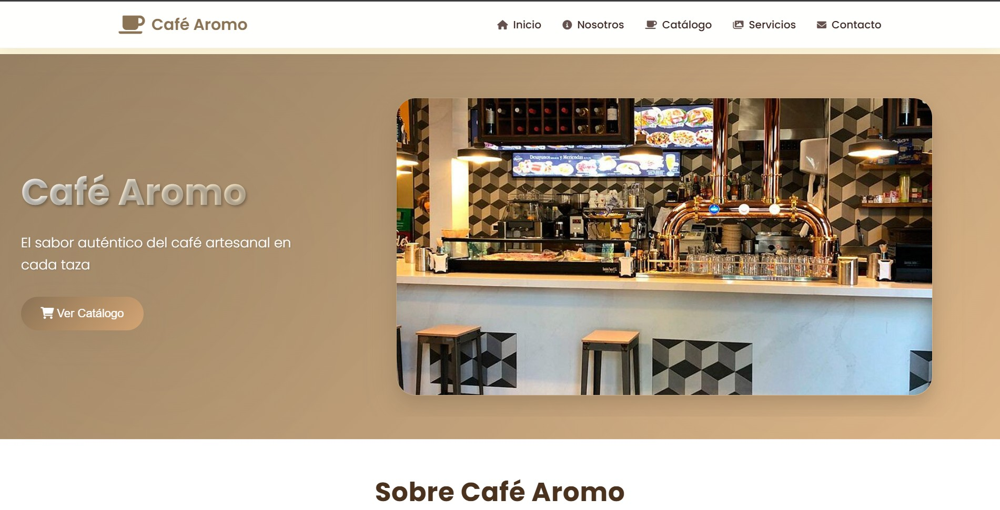
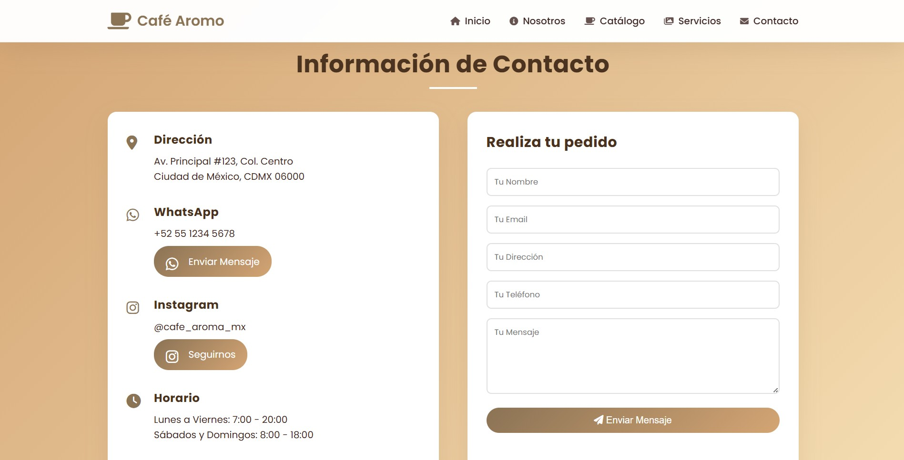
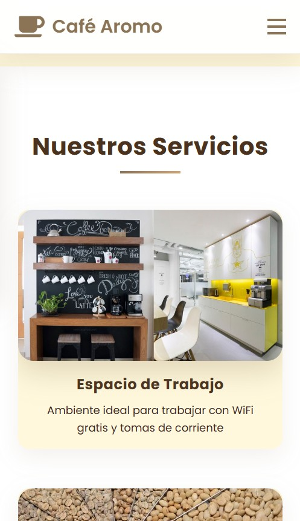
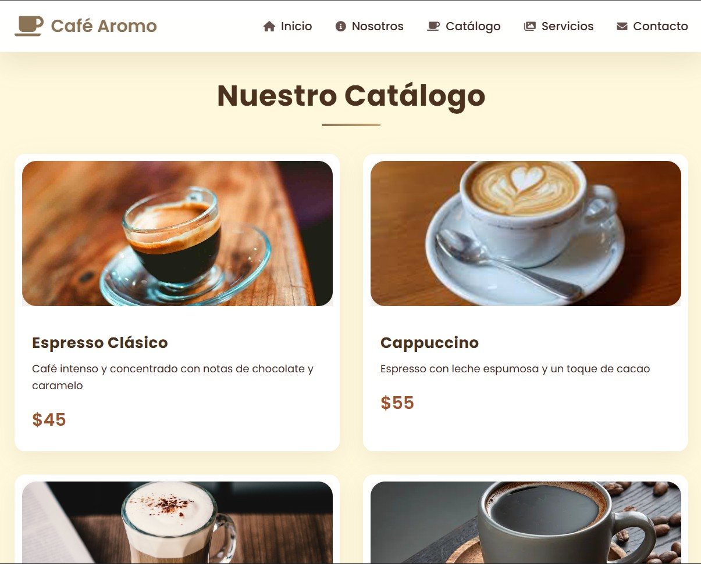
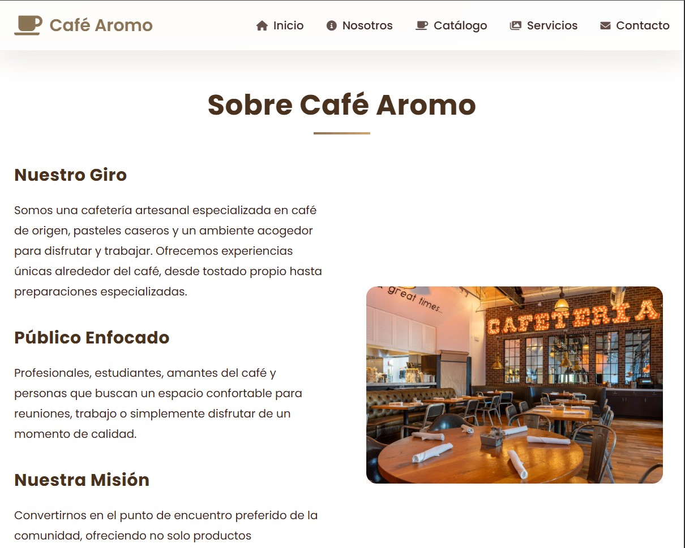
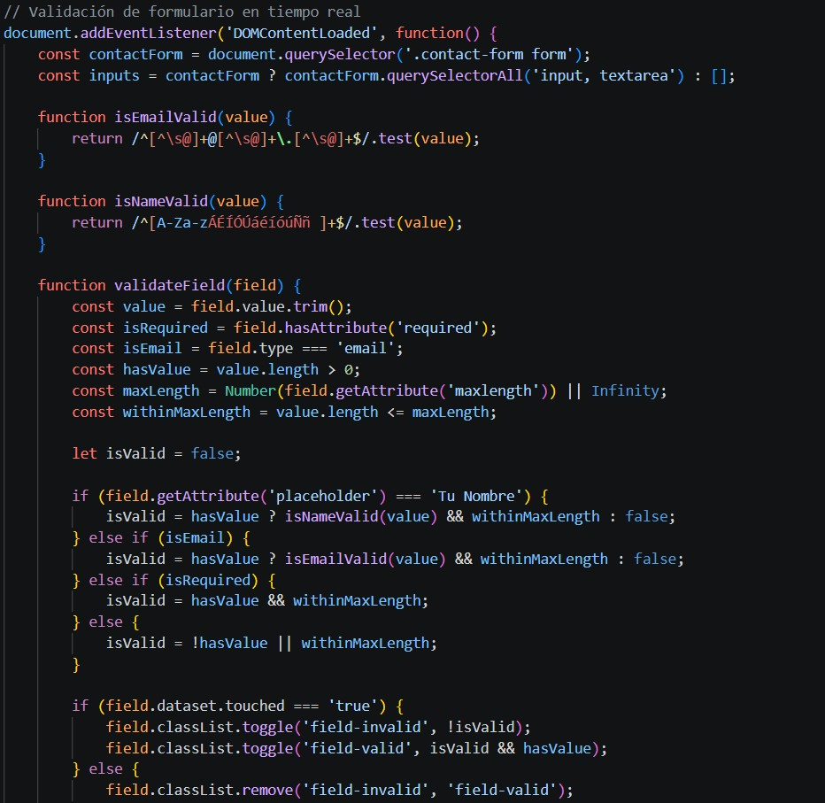

Café Aromo
Diseño y desarrollo de una landing page moderna y responsiva para una cafetería local, enfocada en resaltar la esencia del negocio, su menú visual y optimizar la captura de clientes.

flag El Desafío
El negocio necesitaba una presencia digital atractiva que reflejara su identidad, una navegación fluida para los usuarios y tiempos de carga rápidos que no comprometieran la experiencia visual.
lightbulb La Solución
Se maquetó una estructura limpia y semántica, con optimización de imágenes en formatos modernos y un diseño que transmite calidez y profesionalismo, manteniendo la identidad visual de la marca.

devices Diseño Responsivo
La web es 100% adaptable a cualquier dispositivo móvil y de escritorio, garantizando una experiencia consistente y optimizada en todas las resoluciones.



verified Características Clave
- Optimización de imágenes en formato de última generación (WebP)
- Navegación fluida con scroll suave entre secciones
- Formulario de contacto directo e interactivo
- Estructura de código limpia y semántica
